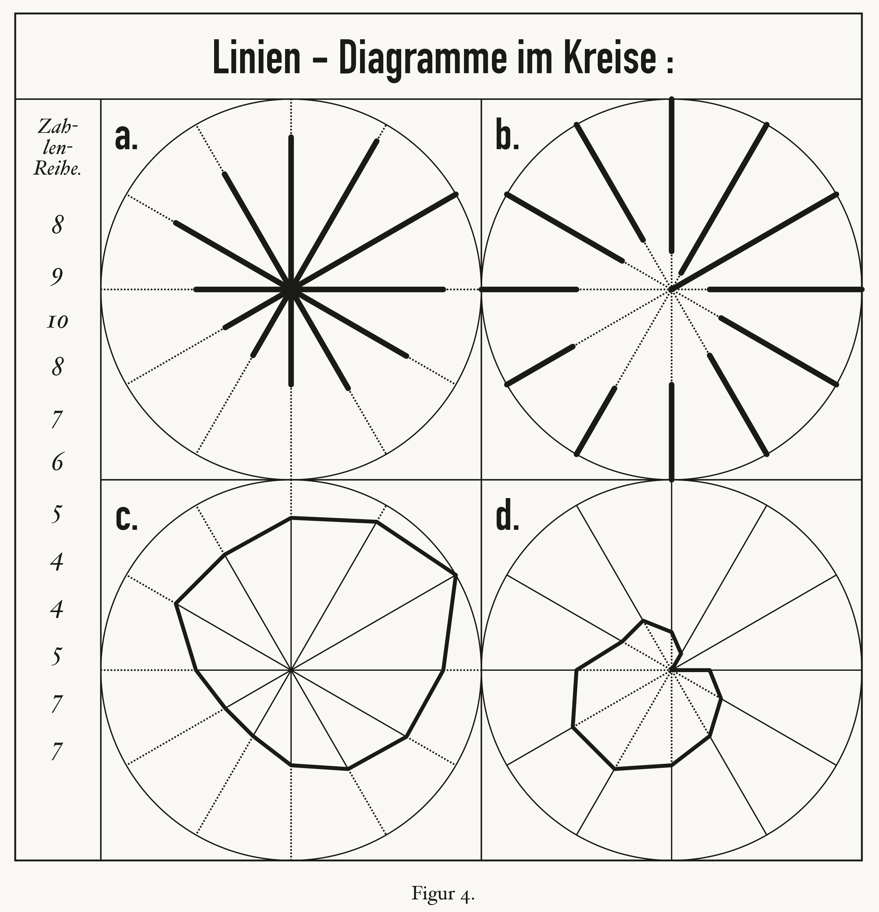

![A square engraved figure titled Linien-Diagramme im Kreise. Down the left edge, under the words Zahlen-Reihe, a column of twelve numbers: 8, 9, 10, 8, 7, 6, 5, 4, 4, 5, 7, 7. To the right, four circles in a two by two grid, labelled a to d, each with twelve radii. In a, thick lines run out from the centre along each radius to different lengths, with dotted lines to the rim. In b, thick lines run in from the rim. In c, a heavy twelve-sided polygon joins points at different distances from the centre. In d, a smaller, lopsided polygon joins points measured in from the rim, close to the centre. Below: Figur 4.](img/mayr-radar-original.jpg)
Show the R code
ink <- p$ink
R <- 10 # the rim is the series' largest value, as Mayr drew it
# The engraver's lettering: a narrow grotesque for the title and the panel
# letters, an italic serif for the numbers. Use the closest faces installed.
grotesk <- c(intersect(c("DIN Condensed", "Arial Narrow"),
systemfonts::system_fonts()$family), dsvar_font())[1]
serif <- c(intersect(c("Hoefler Text", "Baskerville", "Georgia"),
systemfonts::system_fonts()$family), "serif")[1]
# The layout, measured off the scan in units of the scale (a unit is 28.6 px
# of the crop, so the circles are 20 across). Circle a is centred on the
# origin; the frame runs from -14.5 to 30 across and from -30 to 14.5 up, with
# the number column and the title band each 4.5 units deep.
centres <- tibble(panel = c("a", "b", "c", "d"),
from = c("centre", "rim", "centre", "rim"),
cx = c(0, 20, 0, 20), cy = c(0, 0, -20, -20))
xy <- function(r, spoke, cx, cy) spoke_xy(r, spoke) |> mutate(x = x + cx, y = y + cy)
# For each radius: where its solid stroke starts and ends, and where its dotted
# rest runs. a and c measure from the centre, b and d from the rim.
radii <- cross_join(centres, mayr) |>
mutate(tip = if_else(from == "rim", R - value, value),
start = if_else(from == "rim", R, 0),
rest = if_else(from == "rim", 0, R))
solid <- radii |> mutate(xy(start, spoke, cx, cy) |> rename(x0 = x, y0 = y),
xy(tip, spoke, cx, cy))
dotted <- radii |> mutate(xy(tip, spoke, cx, cy) |> rename(x0 = x, y0 = y),
xy(rest, spoke, cx, cy))
polygon <- radii |> filter(panel %in% c("c", "d")) |> mutate(xy(tip, spoke, cx, cy))
rims <- cross_join(centres, tibble(t = seq(0, 2 * pi, length.out = 361))) |>
mutate(x = cx + R * sin(t), y = cy + R * cos(t))
# a and b draw the values as heavy strokes; c and d keep the radii thin and put
# the weight on the polygon, as the engraver did.
heavy <- c(a = 1.5, b = 1.5, c = .35, d = .35)
# The frame's inner rules: under the title, beside the column, between panels.
rules <- tibble(x = c(-14.5, -10, 10, -10), xend = c(30, -10, 10, 30),
y = c(10, 10, 10, -10), yend = c(10, -30, -30, -10))
recreation <- ggplot() +
annotate("rect", xmin = -14.5, xmax = 30, ymin = -30, ymax = 14.5,
fill = NA, colour = ink, linewidth = .5) +
geom_segment(data = rules, aes(x, y, xend = xend, yend = yend),
colour = ink, linewidth = .4) +
geom_path(data = rims, aes(x, y, group = panel), colour = ink, linewidth = .35) +
geom_segment(data = dotted, aes(x0, y0, xend = x, yend = y),
colour = ink, linewidth = .45, linetype = "11") +
geom_segment(data = solid, aes(x0, y0, xend = x, yend = y,
linewidth = I(heavy[panel])),
colour = ink, lineend = "round") +
geom_polygon(data = polygon, aes(x, y, group = panel), fill = NA,
colour = ink, linewidth = 1.05) +
annotate("text", x = 8, y = 12.25, label = "Linien - Diagramme im Kreise :",
family = grotesk, size = 9.6, colour = ink) +
geom_text(data = centres, aes(cx - 9.3, cy + 8.2, label = paste0(panel, ".")),
hjust = 0, family = grotesk, size = 9, colour = ink) +
annotate("text", x = -12.25, y = c(8.6, 7.5, 6.4), label = c("Zah-", "len-", "Reihe."),
family = serif, fontface = "italic", size = 4.2, colour = ink) +
geom_text(data = mayr, aes(-12.25, 3.46 - 2.49 * (spoke - 1), label = value),
family = serif, fontface = "italic", size = 5.4, colour = ink) +
annotate("text", x = 8, y = -31.7, label = "Figur 4.", family = serif,
size = 4, colour = ink) +
coord_equal(xlim = c(-15.3, 30.9), ylim = c(-32.7, 15.2), expand = FALSE) +
theme_void() +
theme(plot.background = element_rect(fill = p$paper, colour = NA),
plot.margin = margin(0, 0, 0, 0))
recreation